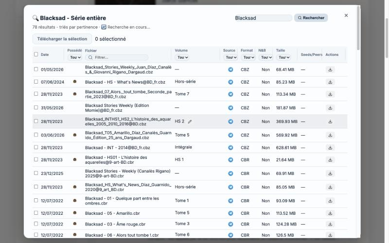
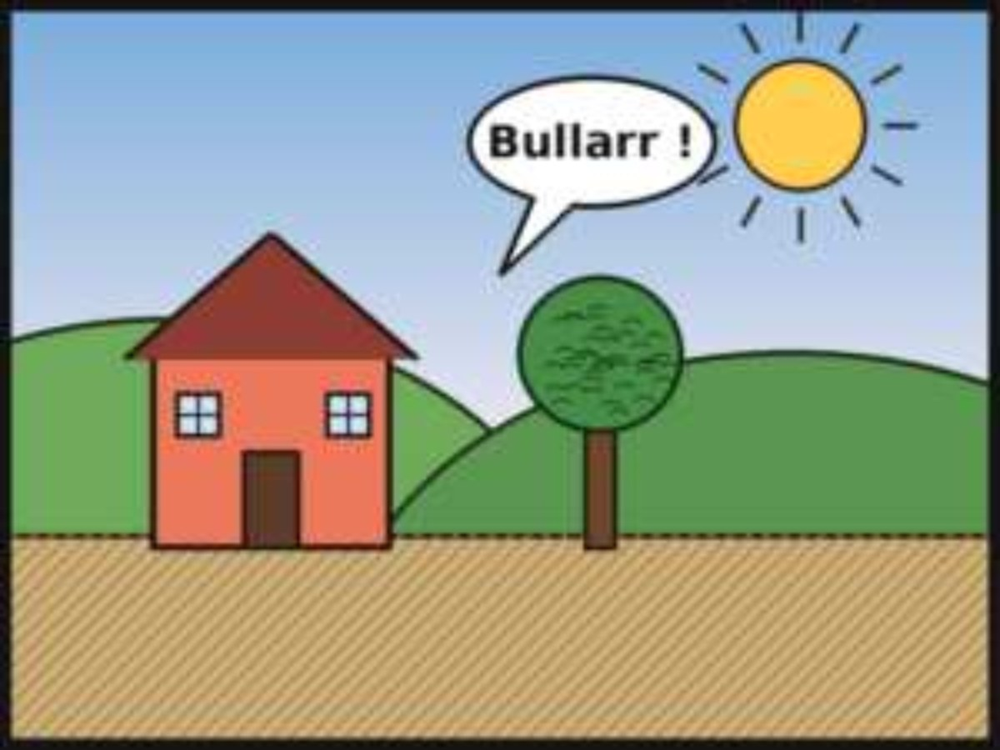
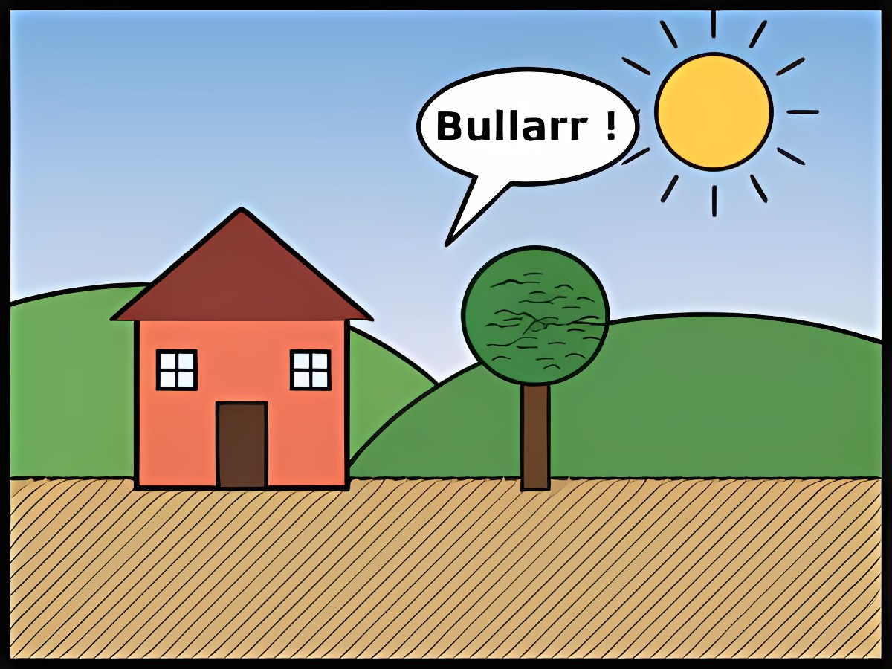

Chercher les tomes, les télécharger, les ranger, compléter leurs métadonnées : avant, c'était l'enfer. Maintenant, Bullarr s'en occupe.





Bibliothèque en vue Tableau : titres, tomes, statut, année et genre.
Bullarr, c'est un Sonarr pour les BD et les comics. Il surveille les flux RSS et les nouveautés EBDZ et Telegram, reconnaît les nouveaux albums de vos séries et télécharge automatiquement ceux qui vous manquent, via EBDZ, Telegram, les torrents ou le téléchargement direct. Il met à jour leurs métadonnées grâce à Bédéthèque et vous laisse tout lire depuis le navigateur. Auto-hébergé, sans base externe.
Chaque série rapprochée de sa fiche Bédéthèque : résumé, auteurs, couvertures et ComicInfo.xml.
Dossiers surveillés, série et tome reconnus, conversion en CBZ, Bis et Ter compris.
Comme Sonarr : les tomes qui vous manquent sont repérés et téléchargés tout seuls.
EBDZ, Telegram, torrents et sources web, en une seule recherche.
Indispensables, Panthéon, Top 100, sorties : ce qui manque à votre collection.
CBZ, CBR et PDF dans le navigateur, avec historique de lecture et bouton HD.
Lecture hors ligne, notifications, F-Droid. Extension Mihon fournie.
Comptes lecteurs, demandes de BD, SSO OIDC et préréglage « Enfant ».
Une case en basse définition, simplement agrandie (à gauche), puis passée dans le modèle Real-ESRGAN de Bullarr (à droite) : traits nets, aplats propres, hachures retrouvées et texte lisible.
Faites glisser la poignée pour comparer.
Dessin original réduit à 300 × 225 px et recompressé en JPEG, puis agrandi ×4. Résultat réel du modèle « Qualité ».


AvantAprès · Real-ESRGANBullarr tourne dans Docker, avec une base SQLite : rien d'autre à installer.
docker-compose.example.yml.SECRET_KEY dans .env et adaptez les volumes à votre bibliothèque.git clone https://github.com/gwenvador/bullarr.git
cd bullarr
cp docker-compose.example.yml docker-compose.yml
# renseignez SECRET_KEY dans .env puis :
docker compose up -dL'application pilote Bullarr depuis votre téléphone : bibliothèque, recherche, téléchargements, import. Elle s'installe depuis le dépôt F-Droid de l'auteur, avec Obtainium (directement depuis les releases GitHub, avec mises à jour), ou en APK signé.
Des tags posés pour vous, et une bibliothèque qu'on interroge en français depuis Claude ou ChatGPT.
Blacksad → polaranimaux-anthropomorphesnew-yorkannées-50
ww22nde-guerre-mondiale → seconde-guerre-mondiale
Chaque nouvelle série est taguée dès son ajout, et les doublons sont fusionnés après votre accord. aiautotagging.com sans clé, ou Claude, Gemini, ChatGPT, OpenRouter, Groq, un LLM local.
Lecture des fiches, tags et listes uniquement : aucun fichier n'est touché. Voir la documentation.